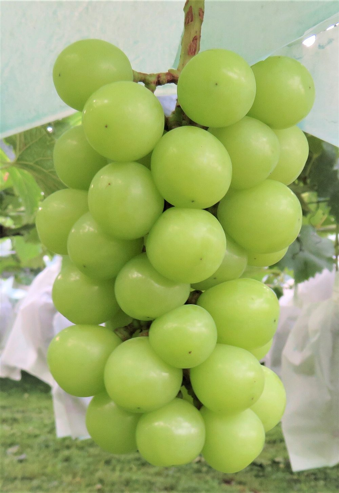

化粧箱・桐箱
房の形が美しく映える専用箱でお届けします。

Our Promise
山梨は、日照に恵まれ、昼夜の寒暖差が大きい果樹の里。
その土地で育てたぶどうを、一房ずつ手に取り、見極め、箱に収めます。
箱を開けた瞬間の喜びまでが、武川農園の贈りものです。
粒の揃い、色づき、軸の状態を確かめ、贈答にふさわしい房を選びます。
涼しいうちに収穫し、鮮度を保つクール便で農園から直接お届けします。
化粧箱、のし、メッセージカード。用途に合わせて丁寧に整えます。
Collection
掲載写真はイメージです。実際の房の形・大きさ・箱とは異なります。
Gift Service
房の形が美しく映える専用箱でお届けします。
御中元・敬老の日・内祝など。お名入れも承ります。
100文字までのお言葉を添えてお送りします。
ご依頼主様と別のご住所へお届け。納品書に金額は記載しません。
Cultivation
一年の出来を左右する枝づくり。樹の状態を見ながら整えます。
養分が行き渡るよう芽と花穂を選び、房の形を整えます。
粒を一つずつ間引き、袋と笠で大切に守ります。
食べ頃を迎えた房から、朝のうちに収穫してお届けします。
Shopping Guide
FAQ
収穫状況に左右されるため、旬（上旬・中旬・下旬）でのご指定を承っています。
乾燥を防ぐ袋などに入れて冷蔵庫の野菜室で保存し、お早めにお召し上がりください。
ご希望の場合は、ご注文時の備考欄にご記入ください。
お届けが難しい場合はご連絡のうえ、代金を全額返金いたします。